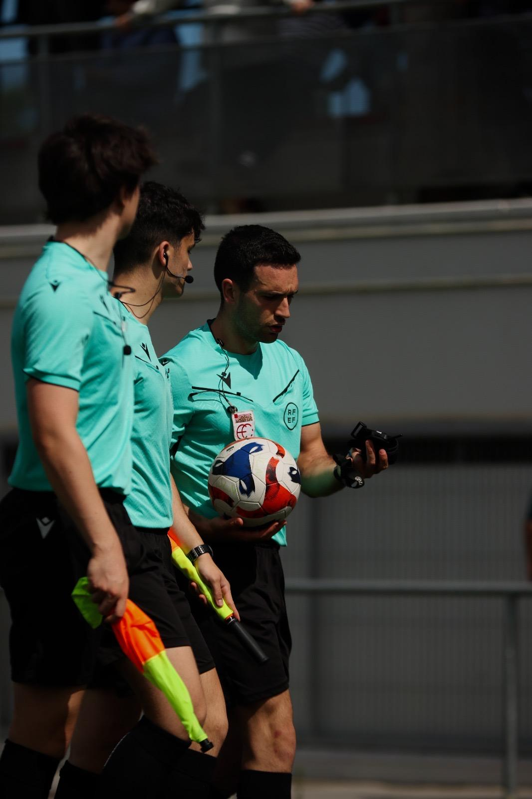

Funciones principales y control del partido

Es la máxima autoridad en el terreno de juego. Se encarga de aplicar las Reglas del Juego, controlar el tiempo de partido y tomar las decisiones disciplinarias oportunas (tarjetas amarillas y rojas).
En el arbitraje moderno, la tecnología de comunicación (pinganillos y comunicadores) nos permite estar conectados en todo momento con nuestros asistentes para contrastar jugadas dudosas.